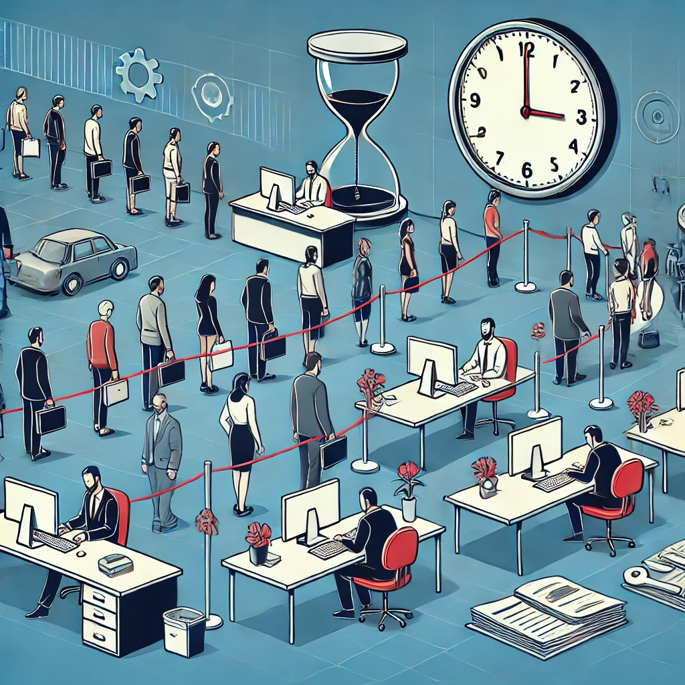

Descripción
Un mal manejo de los tiempos en la atención al cliente y la gestión de ventas puede resultar en la insatisfacción de los clientes y la pérdida de oportunidades de negocio.
Posibles Soluciones
- Uso de Sistemas CRM (Customer Relationship Management).
- Automatización de los procesos de ventas.
- Capacitación del personal de ventas.
- Mejora de los tiempos de respuesta para atender a los clientes.